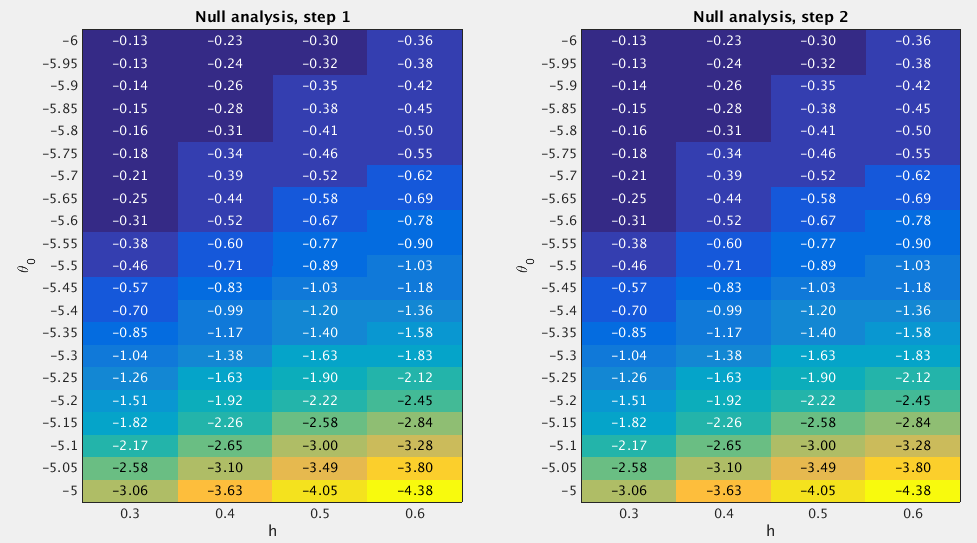

30.2 GSEA Round 2
Last updated: 2016-10-11
Code version: 71e8ca78d4d9c92133cbf3a7ade9b7f01142e838
30.2.1 Fit the null model
From the Round 1 null analysis (Section 30.1), I found that almost 98.8% of the posterior mass is concentrated on the settings h=(0.3:0.1:0.6)' and theta0 = (-6:0.25:-5.25). In Round 2, I used a finer grid. Specifically, I used the grids theta0=(-6:0.05:-5)' and h=(0.3:0.1:0.6)' when fitting the null model. I estimated the (unnormalized) log importance weights (“pseudo-likelihoods”) for all 84 sets of (h,theta0) under null.

After normalizing the log “pseudo-likelihoods” (logw.step*) to posterior probabilities (posp.step*), we can see that the posterior mass is almost uniformly concentrated on the settings h=(0.3:0.1:0.6)' and theta0 = (-6:0.05:-5).
theta0.index <- null.df$theta0 %in% seq(-6,-5.25,by=0.25)
sum(null.df$posp.step2[theta0.index]) ## [1] 0.232132930.2.2 Fit the enrichment model
To perform GSEA, I set h=(0.3:0.1:0.6)' and theta0 = (-6:0.05:-5), since the null analysis suggests that the posterior mass is uniformly placed on these settings. For the log-fold enrichment parameter, I use the grid theta = (0:(5/50):5)', based on the Round 1 enrichment analysis (Section 30.1). The following table lists the GSEA results.
gsea.path <- "~/Dropbox/rss/Data/mchc_2012/pathway/mchc2012_pathway_201609.mat"
gsea.df <- gsea.mat2df(gsea.path) source("src/gsea_dt.R")
gsea.dt